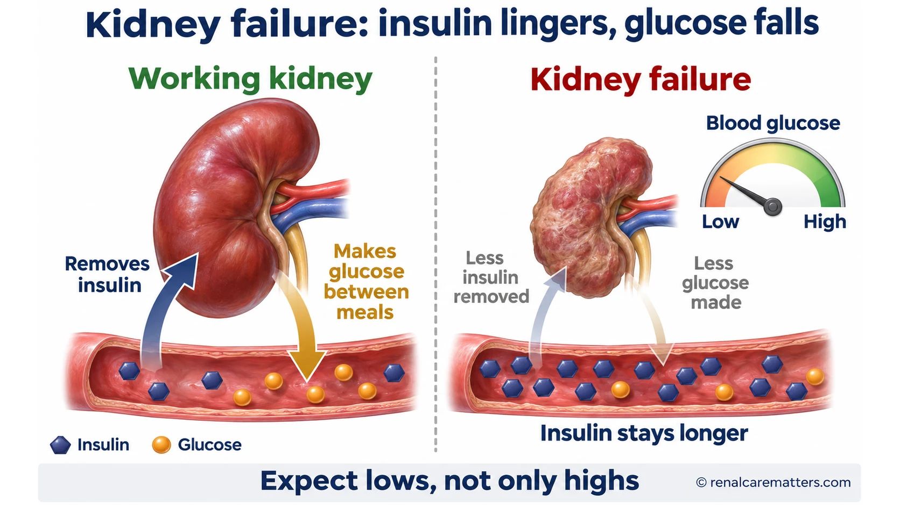
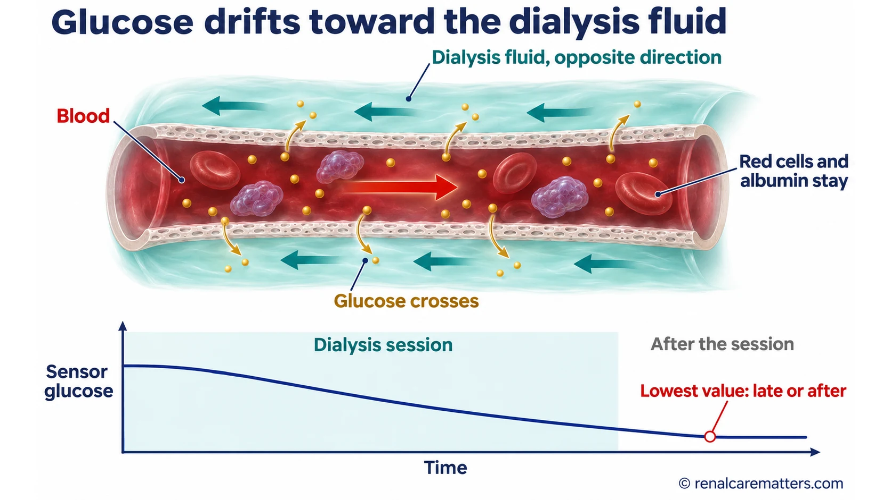
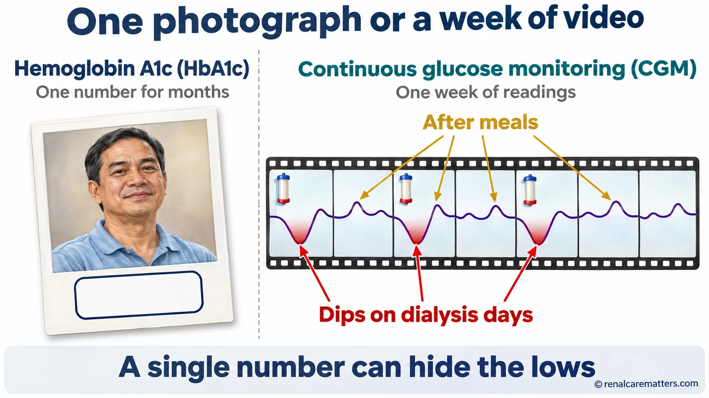
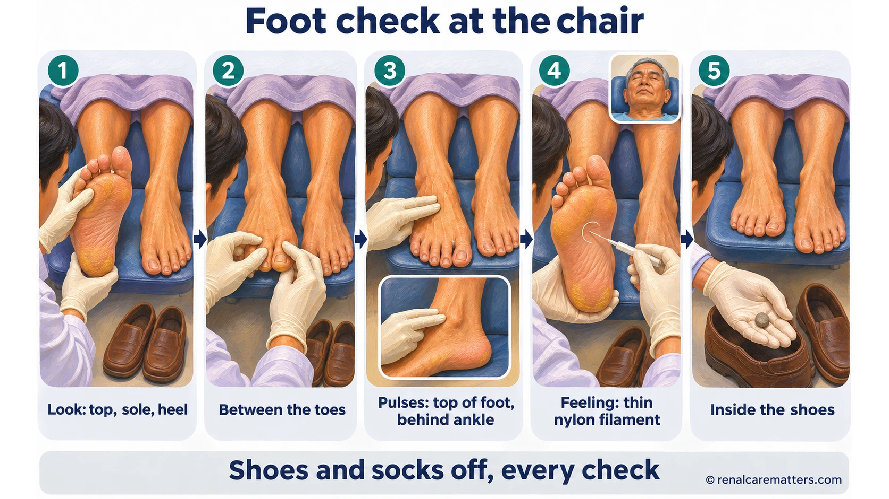
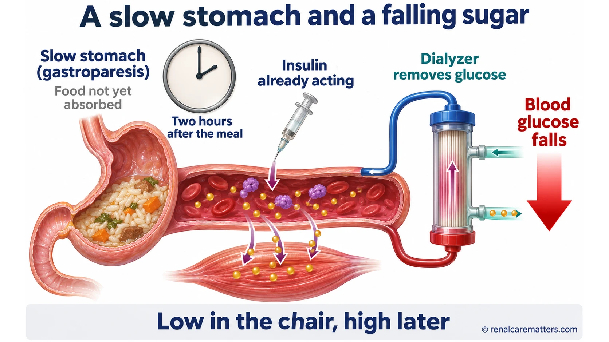

Why insulin needs fall, how to prevent low blood sugar in the chair, which medicines are safe, and how to check the feet.
PublishedNailathalaGipatikPepalwal:ReferencesMga SanggunianMga TinubdanReng Reperensya:16Audience: Physicians who cover hemodialysis shifts · attending nephrologists, medical directors, and head nurses who orient themRead timeOras ng pagbasaOras sa pagbasaOras ning pamamasa:
This module is study material for physicians on duty in hemodialysis units. It explains the reasoning behind common decisions; it is not a protocol. At the chairside, follow your unit’s protocol and ask the attending nephrologist for guidance. Doses and cut-off values are set by your unit. Every case is fictional.
Learning objectives
After this module you should be able to
Explain why insulin needs fall and low blood glucose becomes more likely as kidney function is lost.
Interpret hemoglobin A1c (HbA1c) with caution in a dialysis patient, name the causes of a falsely low or high value, and describe what continuous glucose monitoring (CGM) and the glucose management indicator (GMI) add.
Recognize and respond to low blood glucose around a session per your unit’s protocol, and name the patients at highest risk.
Sort the main diabetes medicine classes into those used, adjusted, or avoided on dialysis, with the guideline status of each.
Perform a focused diabetic foot examination at the chair and decide which findings need same-day escalation.
Recognize the eye, nerve, and stomach complications of diabetes that change how a dialysis session runs.
Pre-testBefore you read, answer the 8 self-assessment questions and note your score. After the module, select New set of questions and compare. The difference is what you learned; the questions you still miss are what to reread.
Start here
The big picture, in plain words
In plain wordsPicture a bathtub with a faucet and a drain. Insulin pours in from the faucet, and the kidney is part of the drain. In kidney failure the drain is half closed, so the same amount of insulin stays in the tub longer and its level runs high.
The picture has a limit. The kidney is not only a drain. Between meals it is also a second faucet that pours glucose into the blood, and in kidney failure that faucet is turned down as well. Uremia also makes muscle and fat resist insulin, which pushes glucose up. The result is a wide swing in both directions, with lows that are easy to miss.1
Figure 1 · Key terms for this module
Hemoglobin A1c (HbA1c)The share of hemoglobin that carries glucose. It reflects average glucose over the life of the red cells, usually about three months.
HypoglycemiaLow blood glucose. Studies in dialysis patients often use a value below 70 mg/dL.
Hypoglycemia unawarenessA low glucose without the usual warning symptoms of sweating, tremor, and hunger.
Counter-regulationThe hormones, such as glucagon, epinephrine, cortisol, and growth hormone, that raise glucose when it falls.
Continuous glucose monitoring (CGM)A small sensor under the skin that reads glucose in the tissue fluid every few minutes.
Glucose management indicator (GMI)An estimate of HbA1c calculated from the average CGM glucose.
SulfonylureaA tablet class, such as glibenclamide, that makes the pancreas release insulin whatever the glucose level.
Diabetes is a leading cause of kidney failure, so many patients on your floor have it. Most of them dialyze through a session without a glucose problem. A few have a low that is silent, that mimics a falling pressure or a stroke, or that comes after they leave. Your work is to find the patients at risk, catch a low early per your unit’s protocol, judge glucose control with the right tools, and use the hours in the chair to look at the feet.
Opening case · fictional
Case: Sugar of 45 at hour two
Mr. Rodolfo Dimaculangan, 61, has had type 2 diabetes for 18 years. He dialyzes on Mondays, Wednesdays, and Fridays through a right arm fistula. Today is Wednesday. He takes premixed insulin twice a day. According to his daughter, he also takes “the yellow tablet” that a clinic doctor gave him last month. He skipped breakfast because he felt full and bloated, but he took his morning insulin.
At hour two, the nurse, Ms. Liza Panganiban, calls you to his chair. He is sweaty and slow to answer. His blood pressure has fallen from 150/80 to 112/64 mm Hg. His capillary glucose is 45 mg/dL (illustrative). Ms. Panganiban has already given the oral glucose that the unit’s hypoglycemia protocol allows, and she has slowed fluid removal. His last HbA1c, from two months ago, was 6.1% (illustrative). His chart says “well controlled.”
Before reading on, decide:
What do you do in the next ten minutes, in what order, and when do you recheck?
Why was his HbA1c a poor guide to his risk, and what would you look at instead?
What will you tell the attending nephrologist about his medicines and his dialysis day?
Keep your answers in mind. The lesson gives you what you need, and the case review near the end shows one sound response.
Lesson · part 1
Why insulin lasts longer and sugar falls lower
Start with normal physiology. The pancreas releases insulin into the portal vein. The liver removes much of it on the first pass, and the kidney removes much of what reaches the general circulation. The kidney filters insulin and breaks it down in the tubule cells. Injected insulin skips the liver altogether, so the kidney matters even more for a patient who injects.1
The kidney also makes glucose. Between meals and overnight, the cortex of the kidney builds new glucose from lactate, glutamine, and glycerol, a process called gluconeogenesis. The liver is the main source, but the kidney adds a real share.1

Figure 2. A working kidney removes insulin and makes glucose between meals. In kidney failure both jobs shrink, so insulin lingers and the body has less glucose of its own to fall back on.
What breaks in kidney failure
Each step in the chain weakens, and the effects add together.1
What changes
What it does to glucose
What you may notice
The kidney clears less insulin, and uremia slows insulin breakdown in other tissues
Each dose acts longer and harder
A patient whose insulin needs have fallen as kidney function declined. Lows late in the day or overnight
Kidney gluconeogenesis is lost
Less glucose enters the blood between meals
Lows after a skipped meal or a long fast
Counter-regulatory hormone responses are blunted
A low is corrected more slowly
A low that recurs after treatment
Uremia causes insulin resistance in muscle and fat
Glucose rises after meals
Highs after meals and wide swings across the day
Drugs or their active products are cleared by the kidney
Sulfonylureas and their breakdown products build up
A low that lasts many hours
These mechanisms come from a review of glycemic management in advanced chronic kidney disease (CKD) and rest on established physiology, not trials.1 A patient may run high after meals and low before dialysis in the same week.
What you do with this
At the start of your shift, read the medication list. Mark every patient who takes insulin or a sulfonylurea, the two classes behind most serious lows. Expect insulin needs to be lower than the old regimen suggests. Never change a standing insulin order yourself. When you see a pattern of lows or highs, report it to the attending nephrologist with the values and times.
RememberWithout kidneys, insulin stays longer and the body makes less glucose of its own. Expect lows, not only highs.
Lesson · part 2
What the dialysate does to blood glucose
Think of the dialysis fluid as a sea that the blood touches again and again for four hours. Small molecules in the blood drift toward the level in that sea. Glucose is small, so it diffuses (Module 5) toward the glucose concentration of the dialysis fluid.

Figure 3. Glucose is a small molecule, so blood glucose drifts toward the glucose level of the dialysis fluid. In one sensor study the lowest value often came late in the session or after it.
The picture has a limit. Blood glucose does not stop at the level of the bath. Red cells take up glucose during treatment, and insulin given before the session is still driving glucose into muscle while the dialyzer removes it from the blood.1 The result is that glucose can fall below the bath level.
What the studies show
Burmeister and colleagues dialyzed 20 patients with type 2 diabetes against three baths in turn: glucose-free, 55 mg/dL, and 90 mg/dL. Hypoglycemia, defined as a value below 70 mg/dL, occurred only with the glucose-free and the low-glucose baths. It occurred mainly in patients whose glucose was lower before dialysis.2 This was a small crossover study, so it suggests a pattern rather than proving one.
Hayashi and colleagues placed continuous sensors on 98 patients with type 2 diabetes who dialyzed against baths containing 100, 125, or 150 mg/dL glucose. Sensor glucose fell steadily during the session at every bath concentration. In half of the patients the lowest value fell below the bath concentration. Twenty-one percent had hemodialysis-related hypoglycemia, defined as a sensor value below 70 mg/dL during dialysis or between the end of dialysis and the next meal. Every one of those episodes was without symptoms.3 The study was observational and tested no change in practice. It shows that a glucose-containing bath does not make the session safe by itself.
What you do with this
Know the glucose concentration of the dialysis fluid your unit uses, and whether it is the same on every machine. Know when your unit’s protocol calls for a glucose check: before the session, when symptoms appear, and before the patient goes home. The lowest value may come after the patient leaves.
RememberA glucose-containing bath lowers the risk of a low in the chair. It does not remove it, and the low may come after the patient leaves.
Lesson · part 3
Low sugar in the chair: recognize, respond, prevent
A smoke alarm with a dead battery stays silent during a fire. Hypoglycemia unawareness works the same way. Normally a falling glucose triggers epinephrine, which causes sweating, tremor, a fast pulse, and hunger. These are the warning symptoms. Autonomic neuropathy damages the nerves that carry the signal. Beta-blockers mute the response.
The picture has a limit. The brain still feels the low even when the alarm is silent. Starved of glucose, it produces neuroglycopenic signs: confusion, slow speech, drowsiness, odd behavior, weakness on one side, or a seizure. In the chair these are easy to mistake for something else.
Figure 4. A falling pressure and a falling glucose can look alike in the chair: yawning, sweating, a quiet patient. Check both.
Sweating, yawning, and a quiet patient look like a falling pressure (Module 13). Slurred speech or one-sided weakness looks like a stroke (Module 18). Drowsiness looks like “tired after dialysis.” A fingerstick settles each in two minutes, and a low and a falling pressure can occur together.
In the sensor study, every low during or after dialysis was silent.3 The decision to check cannot wait for classic symptoms.
What the guideline says about monitoring
In the Kidney Disease: Improving Global Outcomes (KDIGO) 2022 diabetes guideline, practice point 2.1.4 (ungraded) states that daily glycemic monitoring with CGM or self-monitoring of blood glucose may help prevent hypoglycemia when drugs that cause hypoglycemia are used. Practice point 2.1.5 (ungraded) prefers drugs with a lower risk of hypoglycemia for patients who do not monitor daily.4
Figure 5 · Dialysis-day sugar plan
Before the sessionIdentify patients on insulin or a sulfonylurea. Ask about today’s meals and the last insulin dose.
Check the risk factorsUse the walk-through below.
WatchTreat sweating, drowsiness, confusion, an unexplained fall in pressure, or a patient who is “not himself” as a possible low.
CheckCapillary glucose from the hand without the access.
Treat per protocolFollow your unit’s hypoglycemia protocol, including the recheck interval.
RecordUse the card below.
Tell the nephrologistReport every low the same day.
Decision walk-through, illustrative. No score is validated. At the start of a session, ask five questions. (1) On insulin or a sulfonylurea? (2) Missed a meal today? (3) Pre-dialysis glucose lower than usual for this patient? (4) Known unawareness, or taking a beta-blocker? (5) Glucose-free or low-glucose bath? Each “yes” raises your vigilance and the frequency of checks your protocol allows.
The factors in this walk-through come from the dialysate studies and the review of mechanisms.2,3,1 The count tells you where to look first. It is not a probability, and a patient with no factor can still have a low.
After a low
A low from a sulfonylurea or a long-acting insulin can return hours after the first correction, because the drug is still acting.1 The patient should not leave the unit until the recheck your protocol requires is normal and the attending nephrologist has agreed to the plan.
Figure 6 · What to write after a low
Time and valueThe time of the first reading and the meter value.
Last insulinType, time, and amount, from the patient or the chart.
Last mealWhen and what, or that the meal was skipped.
TreatmentWhat was given under the protocol, and when.
RecheckEach repeat value and its time.
Who was toldThe attending nephrologist, the time of the call, and the advice received.
Stop and callStop and call the attending nephrologist when a low does not correct with the steps of your protocol, when a low comes with a seizure, a new neurologic sign, or reduced consciousness (follow Module 18 for the emergency), when lows recur across sessions, or when a patient will travel home alone or drive after a low.
RememberCheck the glucose of any patient on insulin or a sulfonylurea who is drowsy, sweaty, confused, or has an unexplained fall in pressure. Do not wait for classic symptoms.
Lesson · part 4
Why HbA1c misleads, and what to use beside it
Think of HbA1c as a stain on red cells. Glucose sticks to hemoglobin slowly and permanently, so the stain builds up over each cell’s life. If the cells are young, they have had less time to stain, and the reading is light even when glucose has been high.
The picture has a limit. Young cells are only one of several distortions in kidney failure, and some push the other way.1,5
Factor
Direction of bias
Mechanism
Shortened red-cell survival in uremia
Falsely low
Cells are removed before they gather a full stain
Erythropoiesis-stimulating agent (ESA) therapy
Falsely low
The marrow releases many new, lightly stained cells
Intravenous iron
Falsely low
Iron allows a burst of new cells
Iron deficiency without treatment
Falsely high
Older cells stay in circulation longer
Carbamylation of hemoglobin by urea
Falsely high with some laboratory methods
A urea product binds hemoglobin and can be read as glycated hemoglobin
Peacock and colleagues compared 258 diabetic hemodialysis patients with 49 diabetic controls. In the dialysis patients, HbA1c rose with the hemoglobin level and fell as the ESA dose rose. HbA1c underestimated glucose control. Glycated albumin, a marker based on a blood protein, was not affected.5 The study was cross-sectional and cannot give the size of the bias in one patient. Glycated albumin has its own problems. It is affected by protein loss and is not validated against outcomes.1

Figure 7. Hemoglobin A1c (HbA1c) is one photograph of the past months. Continuous glucose monitoring (CGM) is a week of video, and it shows the dips on dialysis days that a single number hides.
What HbA1c is associated with in dialysis patients
The Dialysis Outcomes and Practice Patterns Study (DOPPS) followed 9,201 diabetic hemodialysis patients in 12 countries. The association between HbA1c and death was U-shaped. Compared with an HbA1c of 7.0% to 7.9%, the adjusted hazard ratio was 1.35 for values below 5% and 1.38 for values of 9.0% or higher.6 The study was observational. A very low HbA1c may mark poor nutrition, frequent lows, or falsely low readings, and the study does not show that changing HbA1c changes survival.
What the guideline says
The KDIGO 2022 guideline makes four statements that apply here.4 Recommendation 2.1.1 (1C) uses HbA1c to monitor control in diabetes and CKD. Practice point 2.1.2 (ungraded) states that the accuracy and precision of HbA1c decline in advanced CKD, especially in patients on dialysis, in whom its reliability is low. Practice point 2.1.3 (ungraded) states that a GMI derived from CGM can be used when HbA1c does not agree with measured glucose or symptoms. Recommendation 2.2.1 (1C) gives an individualized HbA1c target from below 6.5% to below 8.0%, but only for patients not treated with dialysis.
No guideline gives an HbA1c target for dialysis patients, and no trial has tested one. Galindo and colleagues suggest, from observational data, that a range of 7% to 8% appears most favorable in advanced CKD.1 That is an inference, not a tested target, and targets belong to the attending nephrologist.
Worked example 1: HbA1c to estimated average glucose
The A1c-Derived Average Glucose (ADAG) study derived an equation that converts HbA1c to an estimated average glucose (eAG). It studied 507 people with and without diabetes. It did not study people with kidney failure.7 The site’s eAG calculator (calc-eag-hba1c) performs this conversion.
Illustrative calculation. ADAG equation: estimated average glucose (mg/dL) = 28.7 × HbA1c (%) − 46.7. HbA1c 6.1%: 28.7 × 6.1 = 175.07. Then 175.07 − 46.7 = 128.4 mg/dL. The patient’s glucose log averages 210 mg/dL (illustrative). The HbA1c predicts an average about 80 mg/dL lower than the log shows.
The gap tells you that the two measures disagree. In a dialysis patient on an ESA, the more likely explanation is an HbA1c biased low by young red cells, not a wrong glucose log.5,1 The number does not tell you what the patient’s true average is, and it does not set a target.
What you do with this
When HbA1c and the glucose readings disagree, believe the readings first and report the disagreement. Do not use a “good” HbA1c alone to call control good.
RememberIn a dialysis patient, a “good” HbA1c can hide high sugars, and a low one can be a warning, not a success.
Lesson · part 5
Continuous glucose monitoring in dialysis patients
A fingerstick is one photograph. A continuous sensor is a security camera. It shows when lows happen and whether they cluster on dialysis days.
The picture has a limit. A sensor reads glucose in the fluid around cells under the skin, which lags behind blood by several minutes. During dialysis, fluid removal shifts water out of the tissues, and in theory this could distort the reading. Accuracy must be tested, not assumed.8
What the accuracy studies show
Accuracy is usually reported as the mean absolute relative difference (MARD) between the sensor and a laboratory glucose. A lower MARD means closer agreement. Error grids sort readings by whether the difference would mislead treatment.
MARD about 20%, with sensor readings about 15 mg/dL higher than blood on average. Nearly all values in error-grid zones A and B
These small studies each test one device, and accuracy differs by device. The Dexcom G6 agreed least well with laboratory glucose in the ALPHA study, and in the Narasaki study it read about 15 mg/dL higher than blood on average, which could hide a low.9,11 Most readings fell in the error-grid zones that would not mislead treatment. No trial has shown that CGM reduces lows, admissions, or deaths in dialysis patients.11
Worked example 2: CGM mean glucose to GMI
The GMI converts the average sensor glucose into a number on the HbA1c scale. Bergenstal and colleagues introduced the term and its equation.12 KDIGO practice point 2.1.3 (ungraded) allows the GMI to index glycemia when HbA1c and measured glucose disagree.4
Illustrative calculation. GMI (%) = 3.31 + 0.02392 × mean sensor glucose (mg/dL). Mean sensor glucose 190 mg/dL: 0.02392 × 190 = 4.545. Then 3.31 + 4.545 = 7.9%. Laboratory HbA1c in the same period: 6.4% (illustrative). The difference is 7.9 − 6.4 = 1.5 percentage points.
A gap of this size says that the HbA1c is probably understating this patient’s glucose. It does not say which number is the target, and the GMI equation was derived in people without kidney failure.12 Report the discordance to the attending nephrologist. Do not choose a target.
What you do with a sensor reading
If a patient wears a sensor and it shows a low, or the patient has symptoms, confirm with a fingerstick before you act, per your unit’s protocol. Ask your Medical Director whether the unit accepts sensor readings for decisions and where a sensor may be worn. Keep a sensor off the access arm unless your unit’s policy says otherwise. That arm is reserved for cannulation and access care.
RememberA sensor shows patterns a single test cannot. Confirm any low or symptomatic reading with a fingerstick before you act.
Lesson · part 6
Which diabetes medicines are used, adjusted, or avoided
Picture a traffic-light card for diabetes medicines. Green is generally used, yellow adjusted, and red avoided. The picture has a limit. The colors below are for a patient on dialysis. Many sit in a different color in earlier CKD. Module 20 covers the general rules for prescribing without kidneys.
Three things decide the color. A drug or its active products may build up without kidney clearance. A drug that works in the kidney loses its effect when filtration stops. A drug that lowers glucose whatever the glucose level causes lows, and that risk rises when insulin clearance and kidney gluconeogenesis are lost.1
Class
Kidney issue on dialysis
KDIGO 2022 statement and grade
Flag for the nephrologist
Insulin
Green: generally used, with lower needs and close monitoring. Cleared more slowly. Needs usually fall. Main cause of lows
Practice point 4.2.4 (ungraded): insulin or sulfonylurea doses may need reduction when a glucagon-like peptide-1 receptor agonist (Glucagon-like peptide-1 (GLP-1) RA) is added
Any low, any skipped-meal pattern, any regimen not reviewed since dialysis began
Sulfonylureas, such as glibenclamide (glyburide)
Red for glibenclamide and other long-acting agents. Drug and active products build up. Lows may last many hours
Practice point 4.2.4 (ungraded), as above
Any sulfonylurea on a dialysis patient’s list, especially a long-acting one
Metformin
Red: avoided. Cleared by the kidney. Builds up without kidney function
Recommendation 4.1.1 (1B) applies at an estimated glomerular filtration rate (eGFR) of 30 mL/min/1.73 m² or more. The guideline algorithm stops metformin below 30
Metformin on a dialysis patient’s list
Sodium-glucose cotransporter 2 (SGLT2) inhibitors
Red: stopped at dialysis start. Act in the kidney tubule. Little glucose effect without filtration
Recommendation 1.3.1 (1A) applies at eGFR 20 or more. Practice point 1.3.6 (ungraded): continue below 20 unless not tolerated or kidney replacement therapy is started
An SGLT2 inhibitor still on the list after dialysis began
GLP-1 RA
Yellow: specialist decision. Slow the stomach and cause nausea. Some are not recommended at very low kidney function
Recommendation 4.2.1 (1B): a long-acting GLP-1 RA when targets are not met on metformin and an SGLT2 inhibitor
Nausea, poor intake, or a new start by another doctor
Dipeptidyl peptidase-4 (DPP-4) inhibitors
Yellow: used with adjustment. Kidney clearance differs by agent, so the dose depends on which one
No separate graded statement for dialysis patients. The dose depends on the agent
Check the agent and dose against your unit’s drug reference
These statements come from the KDIGO guideline. A joint American Diabetes Association (ADA) and KDIGO consensus report, which is not graded, aligned the two organizations on them.4,13
What the evidence does not cover
The large trials behind the SGLT2 inhibitor and GLP-1 RA statements showed cardiovascular and kidney benefits in patients with CKD who were not on dialysis. None of them enrolled dialysis patients for these outcomes. KDIGO’s practice point on SGLT2 inhibitors says to stop them when kidney replacement therapy starts.4 The site’s SGLT2 inhibitor calculator (calc-sglt2i-eligibility) shows the eGFR bands in these statements, and the metformin calculator (calc-metformin-ckd-safety) shows why metformin is not used on dialysis.
Worked example 4, decision walk-through, illustrative. A new patient’s list contains premixed insulin, glibenclamide, metformin, sitagliptin, and empagliflozin. Metformin: Recommendation 4.1.1 (1B) applies at eGFR 30 or more, and the algorithm stops it below 30. Flag. Empagliflozin, an SGLT2 inhibitor: practice point 1.3.6 says continue until kidney replacement therapy starts. Dialysis has started. Flag. Glibenclamide and premixed insulin: both cause lows, and glibenclamide builds up. Practice point 4.2.4 applies if a GLP-1 RA is added. Flag both. Sitagliptin, a DPP-4 inhibitor: the dose depends on kidney function. Check against the unit’s drug reference. Flag. Output: five flags for the attending nephrologist. No drug is started, stopped, or changed by you.
What you do with this
At medication reconciliation (Module 20), flag the drugs in the last column and any diabetes medicine started by another doctor. Do not start, stop, or change doses. Send the list to the attending nephrologist, with any low from today.
RememberIn a dialysis patient, the diabetes medicine most likely to cause harm today is the one that causes lows: insulin or a sulfonylurea.
Lesson · part 7
Feet, eyes, nerves, and stomach
Four hours in a chair, three times a week, is the most regular foot clinic most of these patients will ever attend.
The picture has a limit. Your job at the chair is to find a problem early and hand it to the right person the same day.
Why the diabetic foot on dialysis is so fragile
Three processes combine. Neuropathy removes the feeling of pain, so a stone in a shoe or a tight sandal wears a hole without complaint. Peripheral artery disease narrows the arteries, so a small wound does not get the blood it needs to heal. Calcification of the artery wall, common in kidney failure, makes the vessels stiff and the pulse hard to judge. Kidney failure adds poor healing and infection.
Ndip and colleagues examined 466 diabetic dialysis patients in the United Kingdom and the United States. Twelve percent had an active foot ulcer. Seventy-nine percent had neuropathy, 57% had peripheral artery disease, 34% had a past ulcer, and 18% had a prior amputation. Ninety-five percent were at high risk of foot complications.14 The study was cross-sectional.
Lavery and colleagues followed 150 diabetic patients on dialysis and 150 diabetic patients with a past foot ulcer for 30 months. Foot ulcers occurred at the same rate in both groups. Amputations occurred at 58.0 per 1,000 person-years in the dialysis group and 13.3 in the ulcer-history group, as reported. Foot-related admissions were also more frequent in the dialysis group: 32.9% versus 14.0%.15 This observational cohort from one health plan suggests that dialysis patients lose limbs more often once an ulcer appears.

Figure 8. The five-step foot check at the chair: look, between the toes, pulses, sensation, and footwear. Shoes and socks come off for every check.
Figure 9 · Foot check at the chair
LookShoes and socks off. Check the top, sole, and heel of both feet for wounds, calluses, blisters, and color change.
Between the toesLook for cracks, moist white skin, and fungal infection.
Pulses and warmthFeel the pulses on the top of the foot and behind the inner ankle bone. Compare the warmth of both feet.
SensationUse your unit’s tool, such as a nylon monofilament, if it uses one.
FootwearLook inside the shoes for stones and rough seams.
Record and escalateCompare with the last check. Escalate per the box below.
Stop and callStop and call the attending nephrologist now for a foot colder or paler than the other, a newly blue toe, or fever with a foot wound. Call the same day for a new ulcer, a black toe, spreading redness, or pus.
Do the check at the interval your unit sets.
Eyes, nerves, and stomach
Advanced diabetic eye disease can carry fragile new vessels. Ask about recent eye bleeding, laser treatment, or sudden visual loss, and report it, because the heparin plan belongs to the nephrologist (Module 19). Autonomic neuropathy blunts the vessel and pulse response to fluid removal (Module 13) and mutes the warning symptoms of a low.

Figure 10. A slow stomach (gastroparesis) holds food while insulin is already working and the dialyzer is removing glucose. The result is a mismatch that can cause a low in the chair and a high later.
Gastroparesis needs a closer look. Insulin given with breakfast expects the meal’s glucose within an hour or two. A slow stomach holds the food while the dialyzer removes glucose. The patient can be low in the chair and high in the evening when the meal finally empties. A meal during dialysis is reasonable for many patients and is supported by a nutrition consensus, but it can also lower the pressure.16 Meal and insulin timing is a question for the attending nephrologist and the dietitian.
RememberLook at both feet with the shoes and socks off. A wound found today is a limb that can still be saved.
On the floor
Real situations: problems and solutions
These are fictional but typical. For each one, cover the answer, decide what you would do, then compare. Where a step depends on local rules, your unit’s procedure and your supervisor’s direction come first.
The quiet grandmother
What you see
Mrs. Teresita Ocampo, 72, usually chats with the nurses. At hour three she is staring ahead and answers slowly. Her pressure is unchanged. She takes insulin and a beta-blocker.
What is likely going on
A silent low is likely. The beta-blocker and long-standing diabetes can mute the warning symptoms, and the brain signs come first.
What to do
Ask for a capillary glucose now. If it is low, follow the unit’s hypoglycemia protocol and recheck at the interval it sets. Call the attending nephrologist and record the episode.
Why it matters
Waiting for sweating or tremor would miss the low. In the sensor data, lows related to dialysis were without symptoms.
Slurred speech at hour two
What you see
Mr. Arnel Castillo, 58, on insulin, develops slurred speech and weakness of the right hand. The nurse is preparing to call for a stroke transfer.
What is likely going on
A stroke is possible, but a low can cause focal signs that resolve with glucose.
What to do
Check the glucose at once while the team prepares. Treat a low per protocol and follow Module 18 for the emergency. Call the attending nephrologist now.
Why it matters
A fingerstick takes two minutes and can prevent a missed low and an unneeded transfer. If the signs persist after correction, the stroke pathway continues.
The good HbA1c
What you see
Mrs. Ligaya Reyes, 66, receives an ESA every session. Her HbA1c is 5.9% and the chart says “excellent control.” Her meter log averages above 200 mg/dL, with two lows last week.
What is likely going on
Her HbA1c is likely biased low by young red cells from the ESA. The log shows both highs and lows.
What to do
Report the discordance to the attending nephrologist. Suggest that decisions rest on the readings, and ask whether a sensor or a GMI would help.
Why it matters
Treating a falsely reassuring HbA1c as truth leaves her highs and lows unaddressed.
The tablet from the clinic
What you see
Mr. Dante Villanueva, 64, on dialysis for a year, shows you a new box of metformin from a doctor he saw for a cough. He also still takes his SGLT2 inhibitor from before dialysis.
What is likely going on
Both drugs are outside their KDIGO 2022 statements for a patient on dialysis.
What to do
Do not stop either yourself. Flag both to the attending nephrologist with the KDIGO statements, and record that the patient was advised to bring all new medicines to the unit.
Why it matters
Medicines started elsewhere are a common source of harm. The prescription belongs to the nephrologist.
The callus with a dark center
What you see
During a foot check on Mrs. Corazon Dizon, 69, you find a thick callus under the ball of the right foot with dark blood beneath it. She feels nothing there.
What is likely going on
Bleeding under a callus in a numb foot often hides an ulcer.
What to do
Record and photograph it if your unit allows. Call the attending nephrologist the same day for wound review and referral.
Why it matters
Dialysis patients lose limbs more often once an ulcer appears. Early review is the best chance to heal it.
Field notes
At the start of each shift, mark every patient on insulin or a sulfonylurea. They are your watch list for lows.
Ask “Did you eat this morning, and did you take your insulin?” before the session starts. Write both answers.
When a diabetic patient’s pressure falls, ask for a glucose check in the same breath.
Read HbA1c beside the glucose log, never alone. When they disagree, believe the readings first.
Look at both feet with the socks off at the interval your unit sets, and compare with the last recorded check.
Case review
Back to the case: Sugar of 45 at hour two
What do you do in the next ten minutes? Ms. Panganiban has given the oral glucose the protocol allows and slowed fluid removal. You go to the chair and check that Mr. Dimaculangan responds, can swallow safely, and is breathing comfortably. If he could not, Module 18 would apply. You recheck his pressure and count his pulse. You ask for a repeat glucose at the interval the protocol sets, and you stay until it is back in range. The fall in pressure follows Module 13. You call the attending nephrologist and agree on the rest of the session. Before he leaves, his final check must be normal, he must have eaten, and he must not travel alone.
Why was his HbA1c a poor guide? An HbA1c of 6.1% converts to an estimated average glucose of about 128 mg/dL by the ADAG equation, but that equation was not derived in kidney failure. If he receives an ESA or iron, his red cells are young and lightly stained, so the HbA1c reads low. A low HbA1c in a patient on insulin and a sulfonylurea can also mean frequent lows, not good control. Look instead at his meter log or sensor report and the record of lows on dialysis days.
What will you tell the attending nephrologist? Use the Situation, Background, Assessment, Recommendation (SBAR) format from Module 1: the low, the treatment, the rechecks, and the fall in pressure. Say that he took his premixed insulin but skipped breakfast because he felt full and bloated, which may point to a slow stomach. Ask the family to bring the “yellow tablet.” If it is a sulfonylurea such as glibenclamide, the low may return for hours. Flag the HbA1c as unreliable. Each change is the nephrologist’s decision.
Skills lab · with your preceptor
Skills checklist: Glucose check and diabetic foot examination at the chair
Perform these steps on a patient at the chair, or on a colleague playing the patient, while your preceptor observes and plays the nurse. Your preceptor rates each step as satisfactory, needs practice, or not observed. Steps marked Critical must all be satisfactory before sign-off. This checklist supports supervised learning; your unit’s own procedure and competency form are the authority. A printable version of every checklist is on the trainer page.
CriticalIdentifies from the chart which patients take insulin or a sulfonylurea.
Asks about today’s meals and the time and amount of the last insulin dose before the session.
CriticalPerforms a capillary glucose check with correct technique on the hand without the access.
Recognizes neuroglycopenic signs that mimic a falling pressure or a stroke, and states why a glucose check comes first.
CriticalApplies the unit’s hypoglycemia protocol in the correct order and rechecks at the interval it sets, without quoting an amount from memory.
Documents the time, value, symptoms, treatment, recheck, and notification.
Removes shoes and socks and inspects both feet, including the soles, heels, and between the toes.
Palpates the foot pulses and compares the warmth of the two feet.
Tests protective sensation with the unit’s tool, if the unit uses one.
CriticalClassifies the findings and escalates any red-flag finding to the attending nephrologist the same day.
Explains to the patient, in plain Filipino or English, one practical way to avoid a low on dialysis days.
Placement activity. For two weeks, list every patient on insulin or a sulfonylurea on your shifts, with the pre-dialysis glucose and any low. Perform and document a foot check on five patients. Review both with your preceptor and identify one patient whose pattern you will report to the attending nephrologist.
Self-assessment
Check your understanding
Each visit draws 8 questions at random from this module’s 15-question bank. Choose the single best answer for each, then select Check answers; an explanation appears under the best answer. Select New set of questions for a different mix. A good target is 7 of 8 on two different sets. Nothing you select is sent anywhere; scoring happens in your browser.
Go deeper
Read next on this site
Diabetes & Your KidneysHow diabetes damages the kidney and how treatment changes as kidney function falls.
Galindo, R. J., Beck, R. W., Scioscia, M. F., Umpierrez, G. E., & Tuttle, K. R. (2020). Glycemic monitoring and management in advanced chronic kidney disease. Endocrine Reviews, 41(5), 756–774. https://doi.org/10.1210/endrev/bnaa017
Burmeister, J. E., Miltersteiner, D. da R., Burmeister, B. O., & Campos, J. F. (2015). Risk of hypoglycemia during hemodialysis in diabetic patients is related to lower pre-dialysis glycemia. Archives of Endocrinology and Metabolism, 59(2), 137–140. https://doi.org/10.1590/2359-3997000000026
Hayashi, A., Shimizu, N., Suzuki, A., Matoba, K., Momozono, A., Masaki, T., Ogawa, A., Moriguchi, I., Takano, K., Kobayashi, N., & Shichiri, M. (2021). Hemodialysis-related glycemic disarray proven by continuous glucose monitoring; glycemic markers and hypoglycemia. Diabetes Care, 44(7), 1647–1656. https://doi.org/10.2337/dc21-0269
Kidney Disease: Improving Global Outcomes (KDIGO) Diabetes Work Group. (2022). KDIGO 2022 clinical practice guideline for diabetes management in chronic kidney disease. Kidney International, 102(5S), S1–S127. https://doi.org/10.1016/j.kint.2022.06.008
Peacock, T. P., Shihabi, Z. K., Bleyer, A. J., Dolbare, E. L., Byers, J. R., Knovich, M. A., Calles-Escandon, J., Russell, G. B., & Freedman, B. I. (2008). Comparison of glycated albumin and hemoglobin A(1c) levels in diabetic subjects on hemodialysis. Kidney International, 73(9), 1062–1068. https://doi.org/10.1038/ki.2008.25
Ramirez, S. P., McCullough, K. P., Thumma, J. R., Nelson, R. G., Morgenstern, H., Gillespie, B. W., Inaba, M., Jacobson, S. H., Vanholder, R., Pisoni, R. L., Port, F. K., & Robinson, B. M. (2012). Hemoglobin A1c levels and mortality in the diabetic hemodialysis population: Findings from the Dialysis Outcomes and Practice Patterns Study (DOPPS). Diabetes Care, 35(12), 2527–2532. https://doi.org/10.2337/dc12-0573
Nathan, D. M., Kuenen, J., Borg, R., Zheng, H., Schoenfeld, D., Heine, R. J., & A1c-Derived Average Glucose Study Group. (2008). Translating the A1C assay into estimated average glucose values. Diabetes Care, 31(8), 1473–1478. https://doi.org/10.2337/dc08-0545
Villard, O., Breton, M. D., Rao, S., Voelmle, M. K., Fuller, M. R., Myers, H. E., McFadden, R. K., Luke, Z. S., Wakeman, C. A., Clancy-Oliveri, M., Basu, A., & Stumpf, M. M. (2022). Accuracy of a factory-calibrated continuous glucose monitor in individuals with diabetes on hemodialysis. Diabetes Care, 45(7), 1666–1669. https://doi.org/10.2337/dc22-0073
Avari, P., Tang, W., Jugnee, N., Hersi, I., Al-Balah, A., Tan, T., Frankel, A. H., Oliver, N., & Reddy, M. (2023). The accuracy of continuous glucose sensors in people with diabetes undergoing hemodialysis (ALPHA study). Diabetes Technology & Therapeutics, 25(7), 447–456. https://doi.org/10.1089/dia.2023.0013
Avari, P., Pushparatnam, R., Leelarathna, L., Tan, T., Frankel, A. H., Oliver, N., & Reddy, M. (2025). Accuracy of the Dexcom G7 continuous glucose monitoring sensors in people with diabetes undergoing hemodialysis (ALPHA-2 study). Diabetes Technology & Therapeutics, 27(5), 402–406. https://doi.org/10.1089/dia.2024.0575
Narasaki, Y., Kalantar-Zadeh, K., Daza, A. C., You, A. S., Novoa, A., Peralta, R. A., Siu, M. K. M., Nguyen, D. V., & Rhee, C. M. (2024). Accuracy of continuous glucose monitoring in hemodialysis patients with diabetes. Diabetes Care, 47(11), 1922–1929. https://doi.org/10.2337/dc24-0635
Bergenstal, R. M., Beck, R. W., Close, K. L., Grunberger, G., Sacks, D. B., Kowalski, A., Brown, A. S., Heinemann, L., Aleppo, G., Ryan, D. B., Riddlesworth, T. D., & Cefalu, W. T. (2018). Glucose management indicator (GMI): A new term for estimating A1C from continuous glucose monitoring. Diabetes Care, 41(11), 2275–2280. https://doi.org/10.2337/dc18-1581
de Boer, I. H., Khunti, K., Sadusky, T., Tuttle, K. R., Neumiller, J. J., Rhee, C. M., Rosas, S. E., Rossing, P., & Bakris, G. (2022). Diabetes management in chronic kidney disease: A consensus report by the American Diabetes Association (ADA) and Kidney Disease: Improving Global Outcomes (KDIGO). Diabetes Care, 45(12), 3075–3090. https://doi.org/10.2337/dci22-0027
Ndip, A., Lavery, L. A., Lafontaine, J., Rutter, M. K., Vardhan, A., Vileikyte, L., & Boulton, A. J. M. (2010). High levels of foot ulceration and amputation risk in a multiracial cohort of diabetic patients on dialysis therapy. Diabetes Care, 33(4), 878–880. https://doi.org/10.2337/dc09-2007
Lavery, L. A., Lavery, D. C., Hunt, N. A., La Fontaine, J., Ndip, A., & Boulton, A. J. (2015). Amputations and foot-related hospitalisations disproportionately affect dialysis patients. International Wound Journal, 12(5), 523–526. https://doi.org/10.1111/iwj.12146
Kistler, B. M., Benner, D., Burrowes, J. D., Campbell, K. L., Fouque, D., Garibotto, G., Kopple, J. D., Kovesdy, C. P., Rhee, C. M., Steiber, A., Stenvinkel, P., Ter Wee, P., Teta, D., Wang, A. Y. M., & Kalantar-Zadeh, K. (2018). Eating during hemodialysis treatment: A consensus statement from the International Society of Renal Nutrition and Metabolism. Journal of Renal Nutrition, 28(1), 4–12. https://doi.org/10.1053/j.jrn.2017.10.003
Educational study material for physicians. Does not replace the attending nephrologist’s orders, the unit’s protocols, required certification courses, or supervised practice.